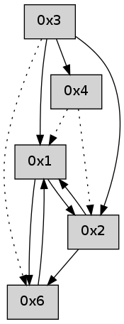

>> << IDX [start] -100 -25 -5 +0 +5 +25 +100 [375.136058092]
 Previous packets
----------------------------------------------------------------------
370.214980 beacon01(adaf) #0 coord=01,02,05,03,04,06 cycle=432.0ms assoc
-- color-indic=0 64 27 b8
370.224941 beacon02(adaf) #0 coord=01,02,05,03,04,06 cycle=432.0ms assoc 64 76 47
370.234942 beacon05(adaf) #0 coord=01,02,05,03,04,06 cycle=432.0ms assoc 64 d0 6d
370.244941 beacon03(adaf) #0 coord=01,02,05,03,04,06 cycle=432.0ms assoc 64 4c 49
370.254941 beacon04(adaf) #0 coord=01,02,05,03,04,06 cycle=432.0ms assoc 64 ea 63
370.264942 beacon06(adaf) #0 coord=01,02,05,03,04,06 cycle=432.0ms assoc 64 9e 7f
370.276623 [Hello(4): seq=167 sym=1 asym=2 sysInfo= stat=1:8,0,0,0/2:0,0,0,0]
370.282557 [Hello(1): seq=66 sym=6,2 sysInfo= stat=6:6,0,0,0/2:0,0,0,0]
----------------------------------------------------------------------
370.707089 beacon01(adaf) #0 coord=01,02,05,03,04,06 cycle=432.0ms assoc
-- color-indic=0 64 e3 d7
370.717049 beacon02(adaf) #0 coord=01,02,05,03,04,06 cycle=432.0ms assoc 64 b2 28
370.727051 beacon05(adaf) #0 coord=01,02,05,03,04,06 cycle=432.0ms assoc 64 14 02
370.737051 beacon03(adaf) #0 coord=01,02,05,03,04,06 cycle=432.0ms assoc 64 88 26
370.747051 beacon04(adaf) #0 coord=01,02,05,03,04,06 cycle=432.0ms assoc 64 2e 0c
370.757050 beacon06(adaf) #0 coord=01,02,05,03,04,06 cycle=432.0ms assoc 64 5a 10
370.768706 [Hello(2): seq=665 sym=6,1 sysInfo= stat=6:14,0,0,0/1:11,0,0,0]
----------------------------------------------------------------------
371.199197 beacon01(adaf) #0 coord=01,02,05,03,04,06 cycle=432.0ms assoc
-- color-indic=0 64 af 67
371.209159 beacon02(adaf) #0 coord=01,02,05,03,04,06 cycle=432.0ms assoc 64 fe 98
371.219157 beacon05(adaf) #0 coord=01,02,05,03,04,06 cycle=432.0ms assoc 64 58 b2
371.229158 beacon03(adaf) #0 coord=01,02,05,03,04,06 cycle=432.0ms assoc 64 c4 96
371.239158 beacon04(adaf) #0 coord=01,02,05,03,04,06 cycle=432.0ms assoc 64 62 bc
371.249159 beacon06(adaf) #0 coord=01,02,05,03,04,06 cycle=432.0ms assoc 64 16 a0
371.260824 [Hello(4): seq=168 asym=1,2 sysInfo= stat=1:9,0,0,0/2:1,0,0,0]
371.263262 [Hello(1): seq=67 sym=6,2 sysInfo= stat=6:6,0,0,0/2:1,0,0,0]
----------------------------------------------------------------------
371.691304 beacon01(adaf) #0 coord=01,02,05,03,04,06 cycle=432.0ms assoc
-- color-indic=0 64 6b 08
371.701265 beacon02(adaf) #0 coord=01,02,05,03,04,06 cycle=432.0ms assoc 64 3a f7
371.711266 beacon05(adaf) #0 coord=01,02,05,03,04,06 cycle=432.0ms assoc 64 9c dd
371.721265 beacon03(adaf) #0 coord=01,02,05,03,04,06 cycle=432.0ms assoc 64 00 f9
371.731266 beacon04(adaf) #0 coord=01,02,05,03,04,06 cycle=432.0ms assoc 64 a6 d3
371.741266 beacon06(adaf) #0 coord=01,02,05,03,04,06 cycle=432.0ms assoc 64 d2 cf
371.752893 [Hello(2): seq=666 sym=6,1 sysInfo= stat=6:15,0,0,0/1:12,0,0,0]
----------------------------------------------------------------------
372.183412 beacon01(adaf) #0 coord=01,02,05,03,04,06 cycle=432.0ms assoc
-- color-indic=0 64 13 a5
372.193373 beacon02(adaf) #0 coord=01,02,05,03,04,06 cycle=432.0ms assoc 64 42 5a
372.203373 beacon05(adaf) #0 coord=01,02,05,03,04,06 cycle=432.0ms assoc 64 e4 70
372.213375 beacon03(adaf) #0 coord=01,02,05,03,04,06 cycle=432.0ms assoc 64 78 54
372.223374 beacon04(adaf) #0 coord=01,02,05,03,04,06 cycle=432.0ms assoc 64 de 7e
372.233373 beacon06(adaf) #0 coord=01,02,05,03,04,06 cycle=432.0ms assoc 64 aa 62
372.245026 [Hello(4): seq=169 asym=1,2 sysInfo= stat=1:10,0,0,0/2:2,0,0,0]
372.256569 [Hello(1): seq=68 sym=6,2 sysInfo= stat=6:6,0,0,0/2:2,0,0,0]
----------------------------------------------------------------------
372.675519 beacon01(adaf) #0 coord=01,02,05,03,04,06 cycle=432.0ms assoc
-- color-indic=0 64 d7 ca
372.685481 beacon02(adaf) #0 coord=01,02,05,03,04,06 cycle=432.0ms assoc 64 86 35
372.695480 beacon05(adaf) #0 coord=01,02,05,03,04,06 cycle=432.0ms assoc 64 20 1f
372.705482 beacon03(adaf) #0 coord=01,02,05,03,04,06 cycle=432.0ms assoc 64 bc 3b
372.715481 beacon04(adaf) #0 coord=01,02,05,03,04,06 cycle=432.0ms assoc 64 1a 11
372.725481 beacon06(adaf) #0 coord=01,02,05,03,04,06 cycle=432.0ms assoc 64 6e 0d
372.737130 [Hello(2): seq=667 sym=6,1 sysInfo= stat=6:15,0,0,0/1:13,0,0,0]
----------------------------------------------------------------------
373.167626 beacon01(adaf) #0 coord=01,02,05,03,04,06 cycle=432.0ms assoc
-- color-indic=0 64 9b 7a
373.177588 beacon02(adaf) #0 coord=01,02,05,03,04,06 cycle=432.0ms assoc 64 ca 85
373.187587 beacon05(adaf) #0 coord=01,02,05,03,04,06 cycle=432.0ms assoc 64 6c af
373.197588 beacon03(adaf) #0 coord=01,02,05,03,04,06 cycle=432.0ms assoc 64 f0 8b
373.207588 beacon04(adaf) #0 coord=01,02,05,03,04,06 cycle=432.0ms assoc 64 56 a1
373.217588 beacon06(adaf) #0 coord=01,02,05,03,04,06 cycle=432.0ms assoc 64 22 bd
373.229261 [Hello(4): seq=170 asym=1,2 sysInfo= stat=1:11,0,0,0/2:3,0,0,0]
373.233298 [Hello(1): seq=69 sym=6,2 sysInfo= stat=6:6,0,0,0/2:3,0,0,0]
----------------------------------------------------------------------
373.659734 beacon01(adaf) #0 coord=01,02,05,03,04,06 cycle=432.0ms assoc
-- color-indic=0 64 5f 15
373.669694 beacon02(adaf) #0 coord=01,02,05,03,04,06 cycle=432.0ms assoc 64 0e ea
373.679695 beacon05(adaf) #0 coord=01,02,05,03,04,06 cycle=432.0ms assoc 64 a8 c0
373.689696 beacon03(adaf) #0 coord=01,02,05,03,04,06 cycle=432.0ms assoc 64 34 e4
373.699695 beacon04(adaf) #0 coord=01,02,05,03,04,06 cycle=432.0ms assoc 64 92 ce
373.709696 beacon06(adaf) #0 coord=01,02,05,03,04,06 cycle=432.0ms assoc 64 e6 d2
373.721338 [Hello(2): seq=668 sym=6,1 sysInfo= stat=6:15,0,0,0/1:14,0,0,0]
----------------------------------------------------------------------
374.151841 beacon01(adaf) #0 coord=01,02,05,03,04,06 cycle=432.0ms assoc
-- color-indic=0 64 12 12
374.161802 beacon02(adaf) #0 coord=01,02,05,03,04,06 cycle=432.0ms assoc 64 43 ed
374.171802 beacon05(adaf) #0 coord=01,02,05,03,04,06 cycle=432.0ms assoc 64 e5 c7
374.181803 beacon03(adaf) #0 coord=01,02,05,03,04,06 cycle=432.0ms assoc 64 79 e3
374.191804 beacon04(adaf) #0 coord=01,02,05,03,04,06 cycle=432.0ms assoc 64 df c9
374.201803 beacon06(adaf) #0 coord=01,02,05,03,04,06 cycle=432.0ms assoc 64 ab d5
374.212585 [Hello(1): seq=70 sym=6,2 sysInfo= stat=6:6,0,0,0/2:4,0,0,0]
374.217123 [Hello(4): seq=171 asym=1,2 sysInfo= stat=1:12,0,0,0/2:4,0,0,0]
----------------------------------------------------------------------
374.643949 beacon01(adaf) #0 coord=01,02,05,03,04,06 cycle=432.0ms assoc
-- color-indic=0 64 d6 7d
374.663910 beacon05(adaf) #0 coord=01,02,05,03,04,06 cycle=432.0ms assoc 64 21 a8
374.693911 beacon06(adaf) #0 coord=01,02,05,03,04,06 cycle=432.0ms assoc 64 6f ba